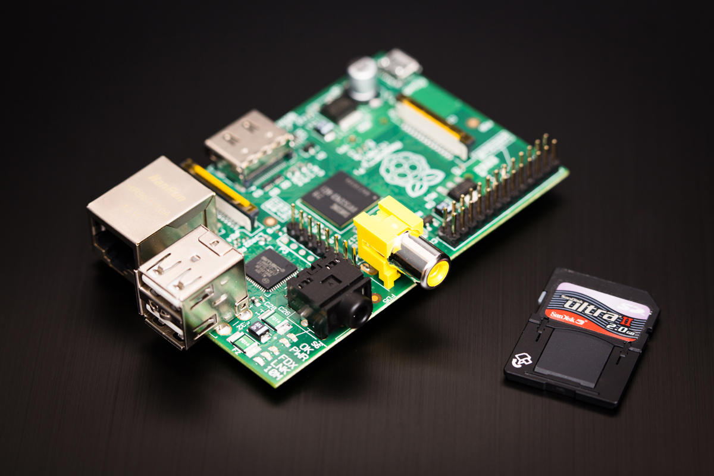
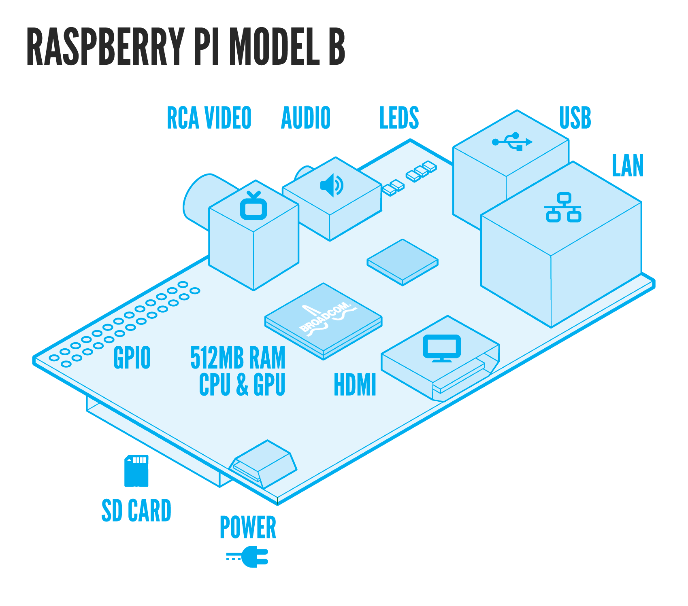

PHP,
Raspberry Pi,
& a lot of fun

/me
var me = {
"user": "Ronan"
, "age": 35
, "origin": "Brittany"
, "twitter": "@arno_u_loginlux"
, "repo": "github.com/ronanguilloux"
, "work": "cto@lespolypodes.com"
, "tags": [
"dad"
, "bearded web developer"
, "foss supporter"
]
}
PHP Appreciation Society Member
since 1999
3 sincere warns about PHP on Raspi
1/3: Raspberry Pi is...
not a production environment,
not scalable,
not safe for work
not entreprise-ready
and it's OK.
So...
HACK, LEARN, HAVE FUN
or STFU
2/3: PHP is serious IT after all. Raspi is not.
PHP is for web-based business
(or not)
~
Raspberry Pi is for week-end projects
(& vice-versa)
3/3: by design...
PHP is not for Hardware
(integrated circuits, controllers, sensors...)
~
Raspberry Pi is 100%
for learning & playing
with electronic hardware!
Meet the raspberry Pi
So this is how it started:
I bought a Rasberry Pi.
Meet the raspberry Pi
What’s a Raspberry Pi?
The Raspberry Pi is a credit-card sized computer that plugs into your TV and a keyboard. It’s a capable little PC which can be used for many of the things that your desktop PC does, like spreadsheets, word-processing and games. It also plays high-definition video. We want to see it being used by kids all over the world to learn (python) programming.
http://www.raspberrypi.org/faqs
Who did it?
The idea behind a tiny and cheap computer for kids came in 2006, when Eben Upton, Rob Mullins, Jack Lang and Alan Mycroft, based at the University of Cambridge’s Computer Laboratory, became concerned about the year-on-year decline in the numbers and skills levels of the A Level students applying to read Computer Science. From a situation in the 1990s where most of the kids applying were coming to interview as experienced hobbyist programmers, the landscape in the 2000s was very different; a typical applicant might only have done a little web design.
http://www.raspberrypi.org/about
Meet the raspberry Pi
- not an open hardware
- Broadcom BCM2835 700MHz ARM1176JZFS processor with FPU and Videocore 4 GPU
- GPU provides Open GL ES 2.0, hardware-accelerated OpenVG, and 1080p30 H.264 high-profile decode
- GPU is capable of 1Gpixel/s, 1.5Gtexel/s or 24GFLOPs with texture filtering and DMA infrastructure
Meet the raspberry Pi
- SDRAM 512 Megabytes (MiB)
- Boots from SD card, running Debian-based Raspbian “wheezy” or Arch Linux ARM GNU/Linux based distributions
- Also: Fedora, Gentoo, Slackware, Firefox OS, Android
- 10/100 BaseT Ethernet socket
- Video outputs: Composite RCA, HDMI
- Audio outputs: 3.5 mm jack, HDMI
- Onboard storage: SD, MMC, SDIO card slot
Meet the raspberry Pi
Manufactured in Europe!
Raspi are manufactured in the UK,
at Sony's manufacturing facility in Pencoed, Wales.
1 million sold a year, since 2012.
GPIO pins!
#raspi for impatients
Where can I buy one?
$35 / 32.72 €
(26 € exc. VAT)
Power supply or SD cards are not included
#raspi for impatients
Essential accessories
a regular 5V / 1A smartphone charger
with mini micro USB cable
#raspi for impatients
Essential accessories
a regular USB Wireless Dongle
#raspi for impatients
Essential accessories
a SD CARD
#raspi for impatients
Essential accessories
(optional) a USB flash drive
Mind the box case!
#raspi for impatients
Essential accessories
a box case!
Use a cobbler breakout
see Adafruit
Will my USB Webcam fit?
check the community documentation:
http://elinux.org/RPi_VerifiedPeripherals
keyboards, bluetooth dongles, soundcards, 3G, IR, GPS, HDMI/DVI/VGA cables & converter boxes, webcams, TV tuners,...
Screen ?
To buy one of these monitors, search eBay for "Car TFT" and there will be loads of results. It should cost about £10 ($16). It requires a 12V power supply, since it is designed to be powered by a car battery, but you can power it with a regular power adaptor.
Cases, anyone?
Cases
Note the handy slot for the 26-pin IDC cable!
Cases
Cases
Cases
Cases

Cases
Cases
Cases
Cases
Playing cards box is exactly the right size!
Cases
Cases
Cases
home printable cardboard cases
Cases
home printable cardboard cases
Wait a minute...
Where the hell did that come from?
microcontrollers
Arduino (& Arduino-like MC)
Arduino is a tool for making computers that can sense and control more of the physical world than your desktop computer. It's an open-source physical computing platform (...), and a development environment for writing software for the board.
ARM CPU
In 2011: 95% of smartphones, 90% of hard disk drives, 40% of digital televisions and set-top boxes, 15% of microcontrollers and 20% of mobile computers
GOOD NEWS: ARM is now actively targetted by many distro/packages providers: PHP, NodeJs,...
How many ARM cores
have you got at home?
Microsoft Surface, ASUS Eee Pad, Apple iPads, iPhones & iPods, Samsung Galaxy S2/S3/S4, Google Nexus 4/5/10, Google Chrome Book, Blackberry smartphones, Canon PowerShot A470 digital camera, Nintendo DS game console, TomTom GPS...
Wait a minute...
Who did?
Who inspired?
Who buy?
The Joy of DIY
Texas, 1942 (Wikimedia Commons)
"Makers?"
maker [ˈmeɪkə] - n.
people who hack hardware, business-models, and living arrangements to discover ways of staying alive and happy even when the economy is falling down the toilet.
Cory Doctorow, Makers, October 2009, [read it for free]
related: Dreamers, scientists, hackers, self-replicators, teachers, troublemakers, laser-lovers, scouts
"Maker subculture?"
The maker subculture is a contemporary subculture, representing a technology-based extension of DIY culture.
related: DIY, electronics, robotics, 3-D printing, home-automation / domotique, open-source-hardware, fablabs, cnc tools, metalworking, woodworking, knitting, traditional arts and crafts, no-patents
OMG, I see makers everywhere!
- places to meet makers: hackerspaces / makespaces (60+ in France), techshops, makers faire
- magazines: Wired, Lifehacker, MAKE magazine, Instructables, Popular Mechanics(US: 1902, France: 1946)
- Pinterest-like websites: diy.org, thingiverse.com
OMG, I see makers marketplaces everywhere!
- dedicated online marketplaces: tindie.com, etsy.com
- makers favorite crowd funding websites: kickstarter.com, quirky.com, indiegogo.com, ulule.com...
- online sharing tools : circuitbee.com, circuits.io, dz863.com, upverter.com, circuitlab.com
Makers go mainstream
Check this talk from the author, Chris Anderson, formally of WIRED
Conclusions so far
- Raspberry PI is a hackable device:
1st value is software and hardware hackability - NSFW & not scalable AT ALL (but that's OK)
- Running PHP is OK, but PHP was not designed for Hardwaring
- hobbyist & educational purposes FTW
- domestic robots, electronic breadboard & any pet projects that need CPU & network (you know, "Internet of things")
& why not...
- Christmas gift for nephews
(mind the AMIGA/ATARI/AMSTRAD effect) - home automation
- domestic server (serve static HTML like a boss)
- corporate, HTML5-friendly visual dashboards
- interactive kiosks
- public screens
- artistic performances devices
- (cheap & tiny) museums 2.0 device
DIY Projects they really made
with #raspi
2012 Internet of Things Award :

The new e-Health sensor platform adds sensing capability for nine different biometric parameters, such as pulse, blood pressure, oxygen in blood (SPO2), electrocardiogram (EKG), airflow, glucometer, galvanic skin response (GSR), patient position and body temperature, to give the Arduino and Raspberry Pi Community a way to develop new e-Health applications and products.
2012 Internet of Things Award :
The new e-Health sensor platform adds sensing capability for nine different biometric parameters, such as pulse, blood pressure, oxygen in blood (SPO2), electrocardiogram (EKG), airflow, glucometer, galvanic skin response (GSR), patient position and body temperature, to give the Arduino and Raspberry Pi Community a way to develop new e-Health applications and products.
Google Calendar, Raspberry Pi and Lights On / Lights Off

Google Calendar, Raspberry Pi and Lights On / Lights Off
Combining these ingredients:
- an Elro "Wireless Home Control" set
- a Raspberry Pi mini-computer
- some soldering
- some programming and
- Google Calendar
= Have my lights switched on and off automatically based on a schedule I create in Google Calendar.
Spotify client
See e how-to, using Despotify
See also: github.com/Hexxeh/spotify-websocket-api (python)
Raspberry Strogonanoff
A Raspberry Pi Remote Mains Switcher

Controlling BigTrack Motors with my Raspberry Pi
RC Cars!
aonsquared.co.uk/the_dark_pi_rises
Also check pi-cars.com
Drooooones!
See instructables.com/id/Picopter
Also check Tricopter with Picopter Flight Control - Fpv Flight
&Picopter code shared on Github
OK,
I'm a nerd,
show me all the
how-to's
Revelation #0
~
on GNU/LINUX, everything is a file.
Wiring a simple LED with a resistor
The W1 kernel device driver
In /sys/class/gpiothere are two files that allow you to export pins for acces
and unexport pins to remove access.
# modprobe w1-gpio
# cd /sys/class/gpio/
# ls
# export gpiochip0 unexport
Enable GPIO access from user space
# GPIO=17
# cd /sys/class/gpio/gpio$GPIO
# echo $GPIO > export
# ls -l
total 0
--w------- 1 root root 4096 nov. 21 09:45 export
lrwxrwxrwx 1 root root 0 nov. 21 09:45 gpio17 -> ../../devices/virtual/gpio/gpio17
lrwxrwxrwx 1 root root 0 nov. 21 09:44 gpiochip0 -> ../../devices/virtual/gpio/gpiochip0
--w------- 1 root root 4096 nov. 21 09:44 unexport
but does after you export GPIO 22 to user space
echo "in" > direction
cat value
echo "out" > direction
echo 1 > value
Deal with Kernel & permissions 1/2
accessing hardware, the right way.
With default settings the files in /sys/class/gpio are owned by user root and group root. Only the root user will have read/write permissions. We can change this with a udev rule. We create a file in /etc/udev/rules.d that contains the line:
KERNEL=="gpio*", SUBSYSTEM=="gpio", ACTION=="add", PROGRAM="/usr/local/bin/hipi-expin gpio /sys%p"
"Hey, I just want to blink a LED from my raspberry pi hosted website!"
~
=> Create a PHP LED blinker & allow Apache2 to run it
But WARN! Permissions make sens
$ sudo visudo
www-data ALL=NOPASSWD:/path/to/the/blinker
DEMO
Let's PHP all this
~
https://github.com/ronanguilloux/php-gpio
https://github.com/ronanguilloux/php-gpio-web
Meet the community
Read free magazines
Tons of fabulous
week-end projects to achieve
Here we are!
Questions ?
This presentation is available on ronanguilloux.github.com/Raspi-ForumPHP-2013